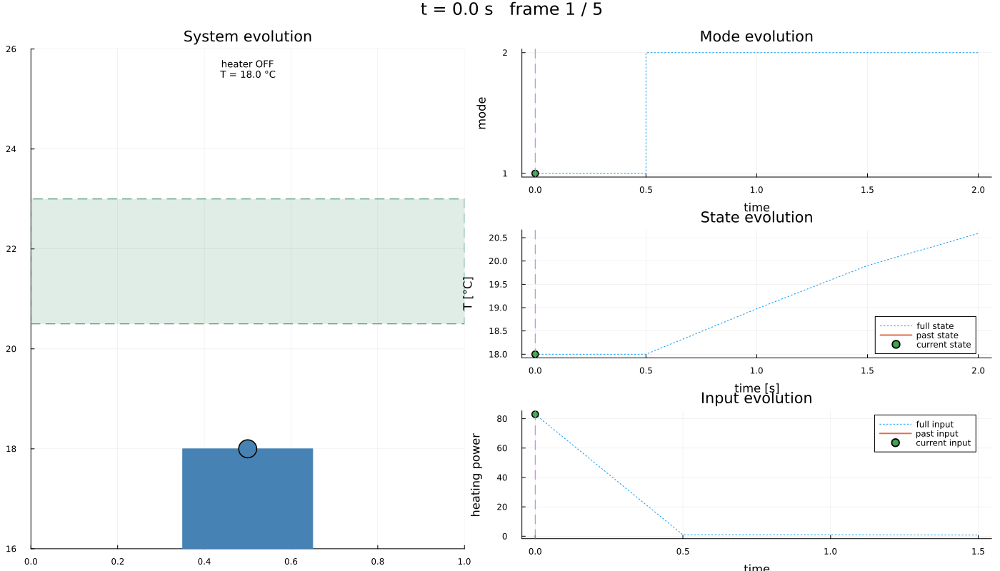

Thermostat: a hybrid system written in JuMP
| System | 1-D hybrid — two modes with guarded switching |
| Specification | reach |
| Solver | hybrid system abstraction |
A room is heated by a thermostat that switches between two discrete modes. The temperature $T$ follows
\[\dot{T} = -\alpha (T - T_a) \quad \text{(heater off)}, \qquad \dot{T} = -\alpha (T - T_a) + \beta u \quad \text{(heater on)},\]
where $T_a$ is the ambient temperature and $u$ the heating power. The heater may switch on once the room has cooled to 19 °C, and off once it has reached 21 °C.
What makes this different from the continuous examples is that the plant has two modes with different dynamics and different admissible inputs — the heater is simply off in one of them — plus guarded transitions between them. It is all written with ordinary JuMP constraints: a mode and a transition are scopes you attach constraints to, exactly as you attach them to a model.
using StaticArrays, JuMP, Plots
import LazySets
using Symbolics, MathOptSymbolicAD
using Dionysos
const DI = Dionysos
const UT = DI.Utils
const ST = DI.System
const PR = DI.Problem
const MP = DI.Mapping
const AB = DI.Optim.Abstraction;The model
Ta, α, β = 18.0, 0.1, 2.0
model = Model(Dionysos.Optimizer);The state is the temperature and the input the heating power. Both bounds are model-wide; the modes narrow them below.
@variable(model, 17.0 <= T <= 25.0, start = 18.0)
@variable(model, 0.0 <= u <= 1.0);@mode binds the name and registers it in the model, exactly like @variable.
@mode(model, off)
@mode(model, on);Each mode carries its own dynamics…
@constraint(off, ∂(T) == -α * (T - Ta))
@constraint(on, ∂(T) == -α * (T - Ta) + β * u);…and its own input set: the heater is off in one mode and throttled in the other. This is an ordinary bound constraint — it is scoped to the mode simply by being written on it.
@constraint(off, u == 0.0)
@constraint(on, 0.2 <= u <= 1.0);A transition is a scope too. A constraint written on it is a guard — which states let the switch happen — unless it contains ∂/Δ, in which case it is the reset map. With no reset the state carries over unchanged, which is what switching a heater does.
add_transition!(model, off => on) do t
return @constraint(t, T <= 19.0)
end
add_transition!(model, on => off) do t
return @constraint(t, T >= 21.0)
end;The goal is to reach a comfortable band, in either mode. A specification written on a mode applies in that mode only, so stating it on both means "comfortable, whatever the heater happens to be doing".
comfortable = LazySets.Hyperrectangle(; low = SVector(20.5), high = SVector(23.0))
@constraint(off, [T] in Final(comfortable))
@constraint(on, [T] in Final(comfortable));The abstraction
Each mode is abstracted by its own sub-solver, so the discretisation is set per mode. Options set on the model itself apply to every mode unless the mode overrides them.
for m in (off, on)
set_attribute(m, "state_grid", MP.GridFree(SVector(0.0), SVector(0.2)))
set_attribute(m, "input_grid", MP.GridFree(SVector(0.0), SVector(0.2)))
set_attribute(m, "time_step", 0.5)
set_attribute(m, "approx_mode", AB.UniformGridAbstraction.GROWTH)
set_attribute(m, "jacobian_bound", u -> SMatrix{1, 1}(-α))
set_attribute(m, "print_level", 0)
endSolving
Nothing selects a solver: the model has modes, so the hybrid abstraction is chosen for it.
optimize!(model);>>Setting up the model
>>Model setup complete
Construct the Hybrid System Abstraction: started
Construct the Hybrid System Abstraction: terminated with success: 464 transitions created
Optimal control terminated with success = true
value init_state : 5.0Results
termination_status(model)OPTIMAL::TerminationStatusCode = 1concrete_problem = get_attribute(model, "concrete_problem");The lowered system is a genuine HybridSystems.HybridSystem — the same object the solver consumes when it is built by hand.
concrete_problem.systemHybrid System with automaton HybridSystems.GraphAutomaton{Graphs.SimpleGraphs.SimpleDiGraph{Int64}, Graphs.SimpleGraphs.SimpleEdge{Int64}}(Graphs.SimpleGraphs.SimpleDiGraph{Int64}(2, [[2], [1]], [[2], [1]]), Dict{Graphs.SimpleGraphs.SimpleEdge{Int64}, Dict{Int64, Int64}}(Edge 1 => 2 => Dict(1 => 1), Edge 2 => 1 => Dict(2 => 2)), 2, 2)Closed loop
The augmented state of a hybrid model is (x, mode), so the simulation starts from a temperature and a mode: the room at 18 °C with the heater off.
trajectory = Dionysos.simulate(model, (SVector(18.0), 1); nsteps = 60);Visualisation
A hybrid trajectory carries a modes channel, so the dashboard adds a mode panel of its own and hands the current mode to the drawing — the thermometer turns orange exactly while the heater is on.
include(
joinpath(
dirname(dirname(pathof(Dionysos))),
"problems",
"Thermostat",
"thermostat_hybrid_system.jl",
),
);
anim = Dionysos.animate_trajectory_dashboard(
ThermostatHybridSystem.system_plot!(; problem = concrete_problem),
trajectory;
xdims = (1,),
udims = (1,),
Δt = 0.5,
xlabel_state = "time [s]",
ylabel_state = "T [°C]",
ylabel_input = "heating power",
);
gif(anim; fps = 6)
This page was generated using Literate.jl.